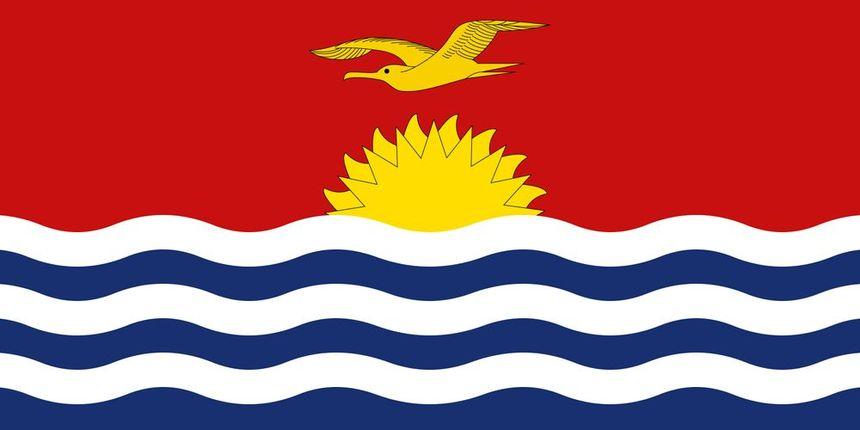

Ari-John Katia
About Me
My name is Ari-John, but most people give up trying to pronounce it and call me John, which I have to admit, is easier. I was born and raised in Kiribati. I am currently working as an IT Officer in a local electronics shop. Currently having an obsession with miniatures and arts and crafts.
Tarawa, Kiribati
Kiribati is a small island nation in the middle of the Pacific Ocean. It is the only country situated in all four hemispheres and because of the International Date Line, it is the first country to see the sunrise with a timezone of UTC+14.
